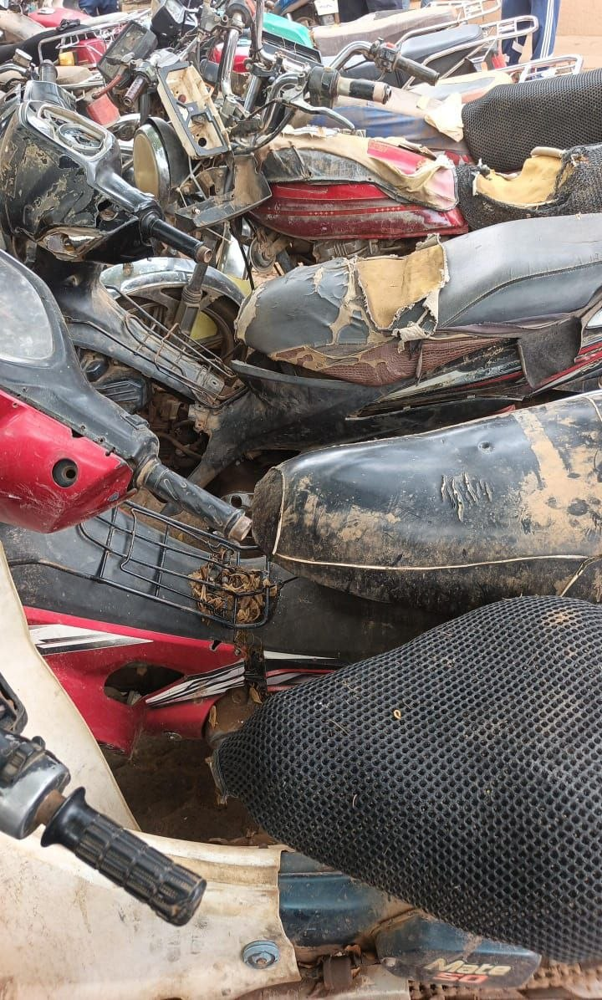

Documents officiels
Annexe au décret n° 2017-705/PRN/MJ du 14 août 2017, portant approbation des statuts de l'ACGSCGRA.
Annexe au décret n° 2017-705/PRN/MJ du 14 août 2017, portant approbation des statuts de l'Agence Centrale de Gestion des Saisies, des Confiscations, des Gels et des Recouvrements d'Avoirs
Article premier : L'Agence Centrale de Gestion des Saisies, des Confiscations, des Gels et des Recouvrements d'Avoirs est la structure nationale de gestion des biens, quelle que soit leur nature, saisis, confisqués, gelés et recouvrés, dans le cadre des procédures pénales. A ce titre l'Agence Centrale est chargée de :
Article 2 : L'agence Centrale est administrée par un Conseil d'Administration composé de onze (11) membres et dirigée par un Directeur Général assisté par un Secrétaire Général.
Le Conseil d'Administration de l'Agence comprend :
Les sept (7) premiers membres du Conseil d'Administration mentionnés peuvent se faire représenter.
Le président du Conseil d'Administration est choisi parmi les membres du Conseil et nommé par décret pris en Conseil des Ministres.
En cas de vacance pour quelque cause que ce soit du siège d'un membre du Conseil, il est pourvu à son remplacement, dans les mêmes conditions de nomination, pour la durée du mandat restant à courir si cette vacance survient plus de six mois avant le terme normal de celui-ci.
Les administrateurs perçoivent des jetons de présence dont le montant est fixé par le Conseil d'Administration conformément à la réglementation en vigueur. Les administrateurs peuvent percevoir des frais de déplacement et de séjour, dans les conditions prévues par la réglementation applicable aux fonctionnaires civils de l'Etat.
La fin des fonctions d'administrateur peut résulter de l'expiration du mandat, du décès, de la démission ou de la révocation individuelle ou collective décidée par le Ministre de la Justice.
Article 3 : Le Conseil d'Administration se réunit au moins trois fois par an, sur convocation de son Président.
Le Président fixe l'ordre du jour sur proposition du Directeur Général.
L'ordre du jour est porté à la connaissance des membres du Conseil d'Administration au moins quinze jours avant la date de réunion.
Le Conseil d'Administration est réuni de plein droit, à la demande des Ministres de tutelle ou de la majorité de ses membres, sur les points de l'ordre du jour déterminés par eux, dans le délai de quinze jours suivant la demande.
Le Conseil d'Administration ne peut valablement délibérer que si la moitié au moins de ses membres ou de leurs représentants est présente.
Si le quorum n'est pas atteint, le Conseil est à nouveau convoqué sur le même ordre du jour dans un délai maximum d'un mois. Il délibère alors sans condition de quorum.
Les délibérations sont adoptées à la majorité des voix des membres présents ou représentés.
La voix du Président est prépondérante en cas de partage égal des voix.
Le Directeur Général de l'Agence, le Secrétaire Général, l'autorité chargée du contrôle financier et l'agent comptable assistent aux réunions du Conseil d'Administration avec voix consultative.
Le Président peut appeler à participer aux séances du Conseil d'Administration, avec voix consultative, toute personne dont il juge la présence utile.
Article 4 : Le Conseil d'Administration règle par ses délibérations les affaires de l'établissement. Il délibère notamment sur :
Le Conseil d'Administration peut déléguer au Directeur Général certaines des compétences prévues au présent article, à l'exception des matières mentionnées aux points 2, 3, 7 et 8, dans les limites fixées par le règlement intérieur.
Les délibérations du Conseil d'Administration ne deviennent définitives qu'après approbation conjointe du Ministre de la Justice et du Ministre des Finances et ce, conformément à la réglementation en vigueur.
Article 5 : L'Agence Centrale de Gestion des Saisies, des Confiscations, des Gels et des Recouvrements d'Avoirs est dirigée par un Directeur Général. Il est nommé pour un mandat de trois (3) ans renouvelable une fois, par décret pris en Conseil des Ministres sur proposition du Ministre de la Justice, après appel à candidatures.
Il est assisté par un Secrétaire Général nommé pour un mandat de trois (3) ans renouvelable une fois, par décret pris en Conseil des Ministres sur proposition du Ministre des Finances.
Le Directeur Général, assisté par le Secrétaire Général, assure la gestion et la conduite générale de l'Agence.
Il représente l'Agence centrale en justice et dans tous les actes de la vie civile.
Il est ordonnateur des recettes et des dépenses de l'agence.
Il recrute le personnel placé sous son autorité.
Il passe les actes, contrats ou marchés et conclut les transactions nécessaires au bon fonctionnement de l'Agence, sous réserve des attributions confiées au Conseil d'Administration par l'article 4 du présent décret.
Il prépare les séances du Conseil d'Administration, élabore le budget de l'établissement public et exécute les délibérations du Conseil. Il lui rend compte, à chaque réunion, de l'activité de l'Agence et des décisions prises sur le fondement des délégations qu'il a reçues. Il peut déléguer certaines de ses fonctions au Secrétaire Général de l'Agence.
Il peut déléguer sa signature à tout agent de l'établissement public exerçant des fonctions d'encadrement, et ce dans des domaines qu'il détermine.
Il peut nommer des ordonnateurs secondaires.
Il est mis fin à ses fonctions, par décret pris en Conseil des Ministres sur proposition du Ministre de la Justice.
Article 6 : L'Agence Centrale peut accueillir en détachement ou par voie de mise à disposition des agents relevant de la fonction publique de l'Etat et de la fonction publique territoriale, ainsi que des agents relevant d'organismes publics ou privés assurant la gestion d'un service public, dans le cadre de la réglementation qui leur est applicable.
Ils sont nommés pour un mandat de trois (3) ans renouvelable.
L'Agence est assistée dans ses missions par des correspondants dans les services de la police, de la gendarmerie et de la garde nationale, ainsi que dans les services de l'administration des Finances.
Article 7 : Avant d'entrer en fonction, les personnels de l'Agence Centrale prêtent le serment suivant, devant la Cour d'appel de Niamey : « Je jure de remplir fidèlement et loyalement ma mission avec honneur, dignité et probité et de garder en tout lieu et en toute circonstance le secret des informations qui seront communiquées à l'Agence par les autorités judiciaires, les services de police judiciaire et l'administration des Finances, ainsi que celles provenant des agences homologues ».
En cas de manquement grave par un des membres de l'Agence à ses obligations, le Directeur Général en réfère aux autorités de tutelle, à toutes fins utiles.
Article 8 : Les procédures administratives, financières et comptables sont précisées dans un manuel de procédures.
Article 9 : Les dépenses de l'établissement comprennent les frais de personnel autres que ceux pris en charge par leur organisme ou administration d'origine, les frais de fonctionnement et d'équipement, les frais de gestion, de recouvrement et de cession des avoirs saisis ou confisqués qui lui sont confiés et, d'une manière générale, toute dépense nécessaire à l'activité de l'établissement.
Article 10 : Le contrôle financier et les opérations financières et comptables de l'Agence sont effectués conformément aux dispositions relatives au règlement général de la comptabilité publique.
L'agent comptable de l'établissement est nommé par arrêté conjoint des Ministres de la Justice et des Finances.
Des comptables secondaires peuvent être désignés par l'agent comptable, après avis du Directeur Général et avec l'accord du Ministre des Finances.
Article 11 : Les fonds de l'Etablissement sont déposés au Trésor public.
Toutefois, les sommes saisies et les sommes issues de l'aliénation des biens prévue à l'article 649.82 du code de procédure pénale sont déposées sur un compte de dépôt ouvert à la Caisse des dépôts et consignations.
Article 12 : L'Agence dispose d'un budget de fonctionnement, dont le Directeur Général est l'ordonnateur. Ce budget comprend les ressources nécessaires au fonctionnement de l'établissement. Il est alimenté par une contribution de l'Etat sous forme d'affectation spéciale dans la loi de finances.
Article 13 : Le Directeur Général transmet aux Ministres de la Justice et des Finances les rapports semestriels et le rapport annuel après approbation du Conseil d'Administration.
Article 14 : Les ressources de l'Agence centrale sont constituées des dotations de l'Etat, des ressources de l'exploitation de l'Agence et de dons et legs.
Article 15 : Les rémunérations et les autres avantages alloués au personnel de l'Agence Centrale sont fixés par le Conseil d'Administration et soumis à l'approbation des Ministres de tutelle.
Article 16 : Les fournitures et services acquis par l'Agence centrale et les travaux réalisés pour son compte donnent lieu à l'établissement de marchés passés dans les conditions fixées par la réglementation relative aux marchés publics et aux délégations de service public.
Article 17 : La dissolution de l'Agence centrale est décidée dans les mêmes formes que sa création et sa mise en liquidation est décidée par décret.
Le décret de mise en liquidation porte nomination du liquidateur qui remplace le conseil d'Administration et les organes de direction pendant la période de liquidation, et fixe les conditions de sa mission.
A la clôture des opérations de liquidation, les biens meubles et immeubles de l'Agence restant à l'actif sont reversés au patrimoine de l'Etat et les deniers et valeurs, au Trésor Public.
L'apurement du passif sera assuré par l'Etat.
Motocyclettes saisies dans le cadre de procédures pénales, en attente de gestion par l'Agence.

Organisation
Nous contacter